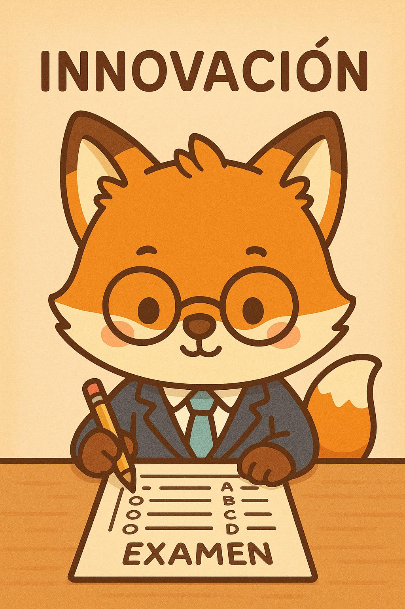

1. ¿Qué valor del emprendedor social implica actuar con transparencia y rectitud en todas sus acciones?
2. ¿Por qué es importante que la organización de un emprendimiento social sea flexible?
3. ¿Qué elemento es esencial en un emprendimiento social exitoso?
4. ¿Qué caracteriza a una necesidad comparativa?
5. ¿Cuál es el principal objetivo del emprendimiento social?
6. ¿Cuál de las siguientes describe mejor una necesidad sentida?
7. ¿Qué valor se manifiesta cuando el emprendedor se enfrenta a lo desconocido sin garantías de éxito?
8. ¿Cuál de los siguientes ejemplos representa mejor una innovación inclusiva?
9. ¿Cuál es el objetivo principal de un emprendimiento social?
10. ¿Qué distingue a un proyecto de innovación social?
11. ¿Qué es una necesidad percibida?
12. ¿Cuál de los siguientes elementos corresponde a una oportunidad en el análisis FODA?
13. ¿Qué implica la sostenibilidad en un emprendimiento social?
14. ¿Qué valor impulsa al emprendedor a no rendirse ante los fracasos y seguir intentando?
15. ¿Cuál es un ejemplo claro de innovación organizacional según el Manual de Oslo?
16. ¿Por qué es importante contar con un plan en un emprendimiento social?
17. ¿Cuál de las siguientes afirmaciones describe mejor la innovación social?
18. ¿Por qué es importante considerar el impacto social en un proyecto de innovación?
19. ¿Cuál de los siguientes valores permite al emprendedor mantener la calma ante situaciones difíciles?
20. ¿Cuál es el principio fundamental del Enfoque Participativo Rural (EPR)?
21. ¿Cuál de estas NO es una categoría de innovación según el Manual de Oslo?
22. ¿Cuál de las siguientes opciones representa una necesidad normativa?
23. ¿Cuál de los siguientes es un tipo de innovación definido por el Manual de Oslo?
24. Un alto impacto social en una innovación se refleja cuando:
25. ¿En qué consiste la innovación de proceso?
26. La innovación de marketing incluye:
27. En un análisis FODA, las 'debilidades' se refieren a:
28. ¿Qué característica distingue a la innovación inclusiva?